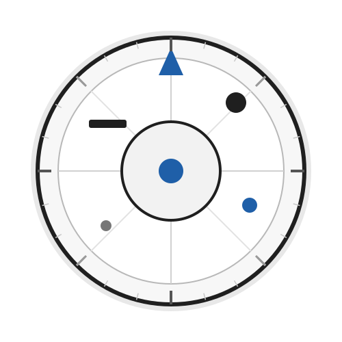

Aufgabenstellung
Ziel der Anwendung ist die Darstellung einer interaktiven 2D-Animation aus einzelnen Bildzuständen. Die Umsetzung erfolgt ausschließlich mit HTML, CSS, JavaScript und Image-Elementen.
Canvas und WebGL werden nicht verwendet.
Graphical Visualisation Technologies
Einsendeaufgabe 01 - Mert Özkan
01
Bild 1 von 24 | 0° | Automatik aus

Die Scheibe kann entweder über die Tastatur oder über die Schaltflächen gesteuert werden. Mit L und R wird jeweils genau ein Rotationsschritt ausgeführt. Mit A wird die automatische Rotation gestartet oder gestoppt.
02
Bild 1 von 8 | Automatik aus
Die Animation besteht aus acht individuell gestalteten Bewegungszuständen. Alle Zustände befinden sich nebeneinander in einer einzigen SVG-Datei.
JavaScript verschiebt das Sprite Sheet innerhalb eines 220 × 220 Pixel großen Sichtfensters. Dadurch wird jeweils nur ein einzelner Animationszustand angezeigt.
Die Animation kann ebenfalls über die Tastatur oder über die Schaltflächen gesteuert werden. Mit L und R wird jeweils genau ein Bewegungsschritt ausgeführt. Mit A wird die automatische Animation gestartet oder gestoppt.
03
Ziel der Anwendung ist die Darstellung einer interaktiven 2D-Animation aus einzelnen Bildzuständen. Die Umsetzung erfolgt ausschließlich mit HTML, CSS, JavaScript und Image-Elementen.
Canvas und WebGL werden nicht verwendet.
Die Scheibe besteht aus 24 separaten SVG-Bilddateien. Jeder Frame stellt einen eigenen Rotationszustand in Schritten von 15 Grad dar.
JavaScript lädt die einzelnen Bilddateien vor und verändert für die Animation die Quelle des HTML-Image-Elements.
Mit den Tasten L und R kann jeweils genau ein Frame vorwärts beziehungsweise rückwärts geschaltet werden. Die Taste A startet und stoppt die automatische Rotation.
Zusätzlich zur geforderten Tastatursteuerung stehen sichtbare Schaltflächen zur Verfügung.
Über einen Frame-Regler kann jeder einzelne Rotationszustand direkt ausgewählt werden. Ein weiterer Regler ermöglicht die Einstellung der Animationsgeschwindigkeit in Bildern pro Sekunde (FPS).
Bei einer manuellen Frame-Auswahl wird eine laufende Animation angehalten. Dadurch erhält die manuelle Eingabe Vorrang vor der automatischen Animation.
Als zusätzliche Animation wurde ein springender Roboter umgesetzt.
Die acht Bewegungszustände befinden sich nebeneinander in einer einzigen SVG-Datei. Jeder Frame besitzt eine Breite von 220 Pixeln.
JavaScript verschiebt das vollständige Sprite Sheet horizontal innerhalb eines begrenzten Sichtfensters. Dadurch ist immer genau ein Animationszustand sichtbar.
Die Einzelbilder unterscheiden sich unter anderem durch die Position des Roboters, die Stellung von Armen und Beinen, die Körperrotation und die Größe des Schattens.
Bei der Gestaltung der Bedienung wurden die Anforderungen an Gebrauchstauglichkeit nach ISO 9241-11 sowie die Interaktionsprinzipien der ISO 9241-110 berücksichtigt.
Die Funktionen sind sowohl über sichtbare Schaltflächen als auch über Tastatureingaben erreichbar. Aktueller Frame, Rotationswinkel, Animationszustand und Geschwindigkeit werden unmittelbar angezeigt.
Die Bedienung wurde möglichst konsistent gestaltet. Manuelle Eingaben führen unmittelbar zu einer sichtbaren Rückmeldung und automatische Animationen können jederzeit gestartet und gestoppt werden.
Die Scheibe und der Roboter wurden als eigene SVG-Grafiken für diese Einsendeaufgabe erstellt. Es wurden keine externen Fotos, Icons oder vorgefertigten Sprite Sheets verwendet.
Die Scheibe basiert auf einer selbst bearbeiteten SVG-Ausgangsgrafik. Mit dem Skript generate-frames.js werden daraus automatisch 24 Rotationszustände in Schritten von jeweils 15 Grad erzeugt. Die resultierenden Dateien frame-00.svg bis frame-23.svg werden anschließend von JavaScript als Einzelbilder geladen.
Der Roboter ist als selbst angepasstes Sprite Sheet mit acht unterschiedlichen Bewegungszuständen umgesetzt. Die einzelnen Zustände befinden sich nebeneinander in einer SVG-Datei und werden während der Animation durch horizontales Verschieben sichtbar gemacht.
Getestet wurden die Einzelsteuerung mit L und R, das Starten und Stoppen mit A, die Bedienung über die Schaltflächen sowie der zyklische Wechsel zwischen erstem und letztem Frame.
Zusätzlich wurden die Frame- und FPS-Regler sowie die Steuerung der Sprite-Sheet-Animation geprüft. Vor der Abgabe wurde die Anwendung in Google Chrome getestet und die Browserkonsole auf JavaScript-Fehler kontrolliert.